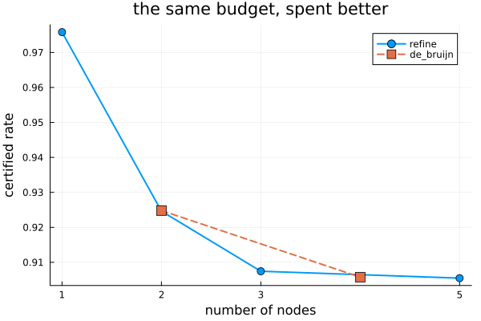
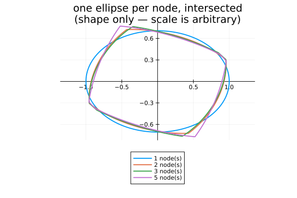

Refinement: letting the graph design itself
Every other example hands certify a graph you chose. This one does not: refine starts from the memoryless graph and grows it, reading off which edge inequalities the solver is held at and splitting the node that is being asked to do too much ((Ninite and Jungers, 2026)).
The result beats a De Bruijn graph of the same size, which is the point — the graph axis of The two axes, drawn stops being something you guess at.
import PathCompleteCertificates as PCC
import Clarabel
using HybridSystems
using Plots
const OPTIMIZER = Clarabel.Optimizer
const TEMPLATE = PCC.QuadraticTemplate()PathCompleteCertificates.QuadraticTemplate{Float64}(Inf)A rotation and a shear. No single quadratic attains the joint spectral radius of this pair, so the memoryless bound is loose and there is something to win.
A = [0.69 * [0.0 1.0; -1.0 0.0], 0.69 * [1.0 1.0; 0.0 1.0]]
problem = PCC.StabilityProblem(PCC.switched_system(A))PathCompleteCertificates.StabilityProblem{HybridSystems.HybridSystem{HybridSystems.OneStateAutomaton, MathematicalSystems.ContinuousIdentitySystem, MathematicalSystems.LinearMap{Float64, Matrix{Float64}}, HybridSystems.AutonomousSwitching, Vector{MathematicalSystems.ContinuousIdentitySystem}, Vector{MathematicalSystems.LinearMap{Float64, Matrix{Float64}}}, FillArrays.Fill{HybridSystems.AutonomousSwitching, 1, Tuple{Base.OneTo{Int64}}}}}(Hybrid System with automaton HybridSystems.OneStateAutomaton(2))The seed: one node, one self-loop per mode.
seed = GraphAutomaton(1)
add_transition!(seed, 1, 1, 1)
add_transition!(seed, 1, 1, 2)HybridSystems.GraphTransition{Graphs.SimpleGraphs.SimpleEdge{Int64}}(Edge 1 => 1, 2)Running the loop
trace = PCC.refine(
TEMPLATE,
seed,
problem;
optimizer = OPTIMIZER,
depth_max = 4,
lift = PCC.forward_edge_lift,
)
sizes = PCC.n_nodes.(PCC.graphs(trace))
bounds = PCC.rates(trace)
collect(zip(sizes, round.(bounds; digits = 5)))4-element Vector{Tuple{Int64, Float64}}:
(1, 0.97581)
(2, 0.92462)
(3, 0.90745)
(5, 0.90547)forward_lift, the default, splits a node into one copy per distinct successor. The seed's only successor is itself, so it is unsplittable and refine converges immediately — correctly, and is_converged says so. forward_edge_lift splits per outgoing edge instead, which is why it is the one used here.
Against De Bruijn
The honest comparison is at equal size: a graph with n nodes carries n quadratic functions either way, so node count is the budget.
de_bruijn = map([1, 2]) do order
graph = PCC.de_bruijn(order, 2)
certificate = PCC.jsr_bound(TEMPLATE, graph, problem; optimizer = OPTIMIZER)
return PCC.n_nodes(graph), certificate.rate
end
plot(
sizes,
bounds;
marker = :circle,
markersize = 5,
lw = 2,
label = "refine",
xlabel = "number of nodes",
ylabel = "certified rate",
xticks = sizes,
legend = :topright,
title = "the same budget, spent better",
)
plot!(
first.(de_bruijn),
last.(de_bruijn);
marker = :square,
markersize = 6,
lw = 2,
ls = :dash,
label = "de_bruijn",
)
At two nodes the bounds coincide: the edge-grained lift of the memoryless graph is the transpose of de_bruijn(1, 2) — co-complete where that one is complete — and on this system the two certify the same rate. At four nodes they part: refinement reaches 0.9043 where de_bruijn(2, 2) stops at 0.9055. De Bruijn spends its nodes on remembering the last two modes whether or not that is where the certificate was tight; refinement spends them where the solver said it hurt.
What the certificate looks like
RefinementTrace carries the certificates themselves, not only the bounds, so the shapes come for free. Each is positively homogeneous of degree rate_exponent, so the radius of $\{V \le 1\}$ in direction $u$ is $V(u)^{-1/d}$ — the trick The sum-of-squares hierarchy uses.
function sublevel_boundary(certificate; samples = 721)
degree = PCC.rate_exponent(PCC.template(certificate))
angles = range(0, 2pi; length = samples)
radii = [certificate([cos(a), sin(a)])^(-1 / degree) for a in angles]
radii ./= maximum(radii)
return radii .* cos.(angles), radii .* sin.(angles)
end
shapes = plot(;
title = "one ellipse per node, intersected\n(shape only — scale is arbitrary)",
aspect_ratio = :equal,
legend = :outerbottom,
framestyle = :origin,
)
for (n, certificate) in zip(sizes, PCC.certificates(trace))
xs, ys = sublevel_boundary(certificate)
plot!(shapes, xs, ys; lw = 2, label = "$n node(s)")
end
shapes
Every graph the loop visits here is co-complete, so common aggregates the node functions with a maximum and the unit ball is their intersection — convex, and gaining a facet per node. That is the opposite of the primal De Bruijn case, where the aggregation is a minimum and the ball is a non-convex union; the lift builds the dual family.
PCC.is_co_complete.(PCC.graphs(trace))4-element BitVector:
1
1
1
1Soundness
A lift that lost path-completeness would produce certificates that certify nothing, silently. It does not, and this is checkable rather than asserted:
all(graph -> PCC.is_path_complete(graph, 1:length(A)), PCC.graphs(trace))trueWhether a lift may be applied at all also depends on the analytical properties of the template — closure under maximum, minimum or linear image — and those are settled in the literature for none of the templates here. That is why refine takes a QuadraticTemplate and nothing else: the scoping is the check.
This page was generated using Literate.jl.